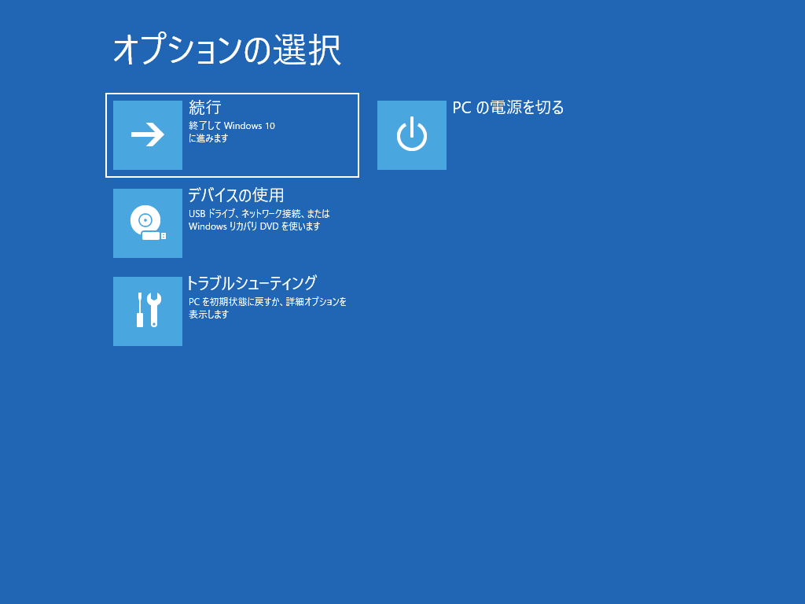
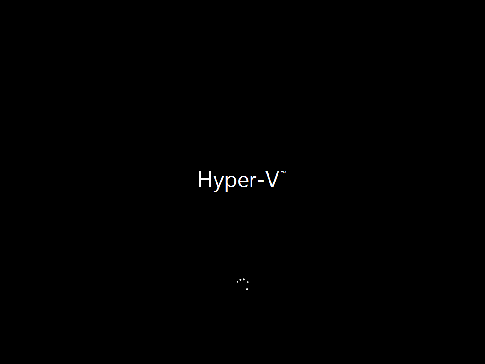
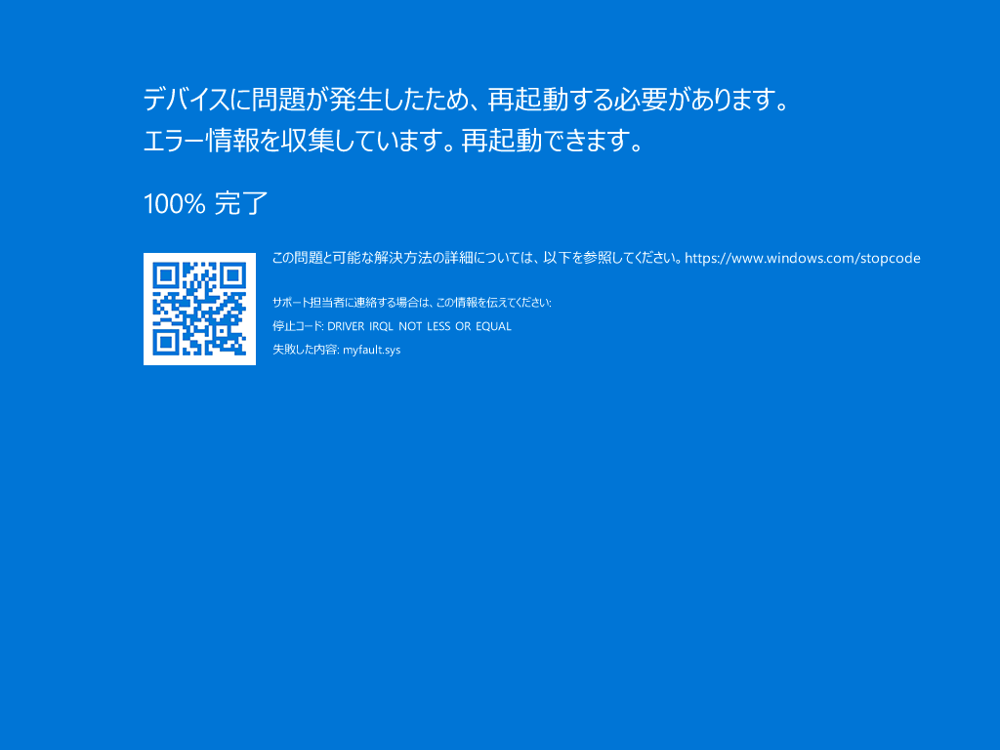

本記事はマイクロソフト社員によって公開されております。
いつも弊社製品をご利用いただきまして誠にありがとうございます。
Windows プラットフォーム サポートの栗木です。
弊社にお問い合わせいただく際に、発生事象の確認項目と事前に採取しておいたほうがよい資料についてご紹介させていただきます。
今回のテーマは「OS が起動しない事象が発生した場合の調査について」です。
起動しなくなった端末の状況を把握するため、以下をご確認してください。
OS 起動が止まった画面 (OS 起動画面の例)
OS のバージョン (Windows 10,11、Windows Server 2012,2016,2019,2022等)
物理環境 or 仮想環境 (Azure、VMWare等)
起動しなくなった端末のバックアップの有無
起動しなくなる前に実施した作業内容とシステムへの変更点
適用した更新プログラム（更新プログラム適用後に起動できなくなった場合）
Windows 回復環境からコマンド プロンプトを立ち上げて資料採取を行います。コマンド プロンプトは、Windows OS のインストール メディアから起動し、Shift+F10 キーを入力しても起動できます。
回復環境での作業ができない仮想環境の場合は、起動可能な他の仮想マシンに起動しなくなった端末のディスクをマウントして、起動可能な他の仮想マシンでコマンド プロンプトを実行し、作業を進めてください。
[オプションの選択] 画面にて以下の順に選択します。
[トラブルシューティング] - [詳細オプション] - [コマンド プロンプト]
コマンドプロンプト (cmd.exe) 画面にて、dir コマンドを用いて、C: から順に Windows フォルダの有無を確認します。
※ システムが正常時に起動している際には、通常 C ドライブ配下に Windows フォルダがございます。しかし、システムが正常に起動しない際には、異なる場合がございますので、ご確認をお願いいたします。
1 | X:\Source>dir D: |
※ この実行例では、D ドライブに Windows フォルダが存在するため、D ドライブがシステム ドライブです。以降の手順はシステム ドライブが D ドライブを前提にご説明させていただきます。
資料を保存するために、USB フラッシュ メモリなど挿入します。
以下のコマンドを実行します。
これらのコマンドにより、ブート設定、ディスク情報、システム ファイル情報、イベントログ、Setup ログ、CBS ログ、起動ログ、Windows Update 関連ログ、DISM ログ、レジストリファイル、適用している更新プログラムの情報、ページファイル、メモリ ダンプが取得できます。
1 | bcdedit /enum > E:\MSLogs\bcdedit.txt |
※ 上記はシステム ドライブが D: で認識され、E ドライブ (外付け HDD や、USB フラッシュ ディスクなど) にコピーする例になります。手順 2 の確認結果および外付けドライブが認識されたドライブによってドライブレターが環境によって異なりますので、環境に合わせて変更ください。
※ コマンド実行に伴いエラーが発生した場合、一旦その内容は無視いただき採取できた資料をご提供ください。可能であればエラー画面のスクリーンショットをご提供ください。
ご採取いただきました資料を弊社にご提供ください。
※ 上記の例の場合、E:\MSLogs に保存されますので、E:\MSLogs フォルダを圧縮いただき弊社に送付ください。
なにも表示されていない黒い画面
Logo と Progress Circle が表示されている画面 (Logo は、端末のメーカーが表示される場合があります。)
黒い背景に Progress Circle が表示されている画面
お待ちくださいと Progress Circle が表示されている画面
Blue Screen of Death (BSoD、ブルースクリーン)
回復環境（OS の起動が複数回連続して失敗した後、回復環境で起動する場合があります。）
外付けの HDD やUSB などのフラッシュメモリを用いた現地での資料採取ができない場合には、リモートのネットワーク共有フォルダをコピー先に使用してデータを抽出してください。
回復環境は既定でネットワークが無効になっておりますので、この方法を用いる場合には、共有フォルダにコピーする前に、回復環境でコマンドプロンプトを起動したのち、以下のコマンドを実行しネットワークインターフェースを構成する必要があります。
1 | startnet.cmd |
インターフェース名/インデックスの確認方法
1 | netsh interface ipv4 show interfaces |
ネットワークドライブへの接続
1 | net use <ドライブ文字:> <共有フォルダのパス名> /user:<接続するアカウント> <パスワード> |
本情報の内容（添付文書、リンク先などを含む）は、作成日時点でのものであり、予告なく変更される場合があります。